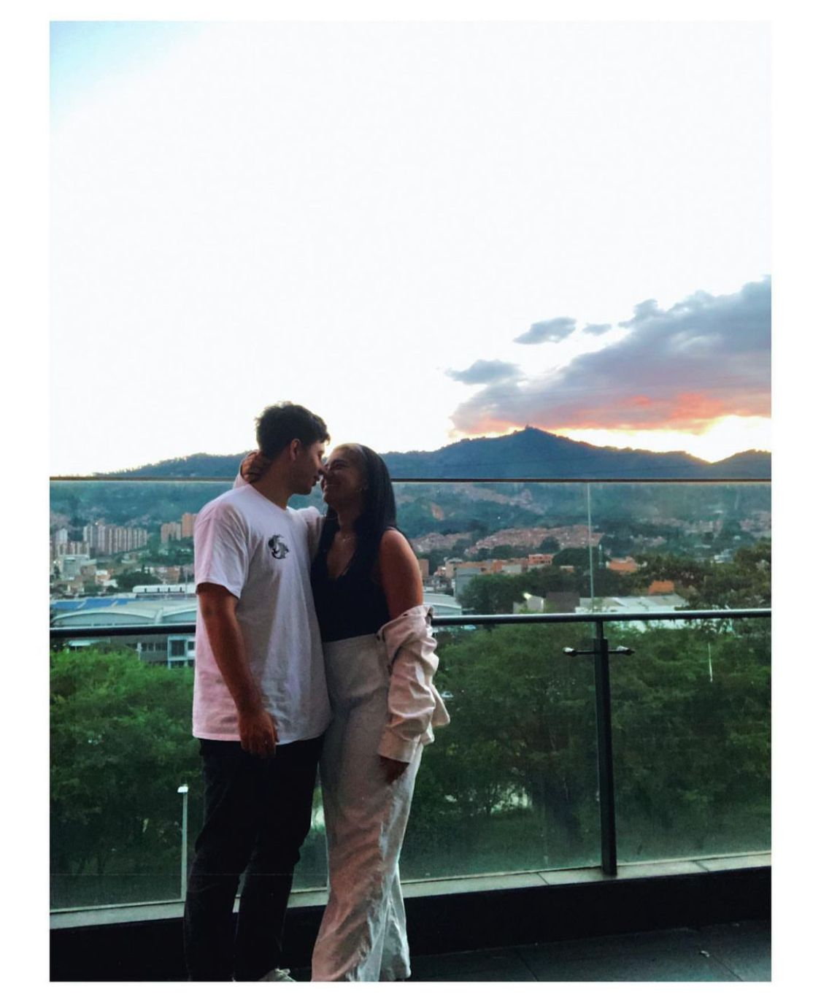
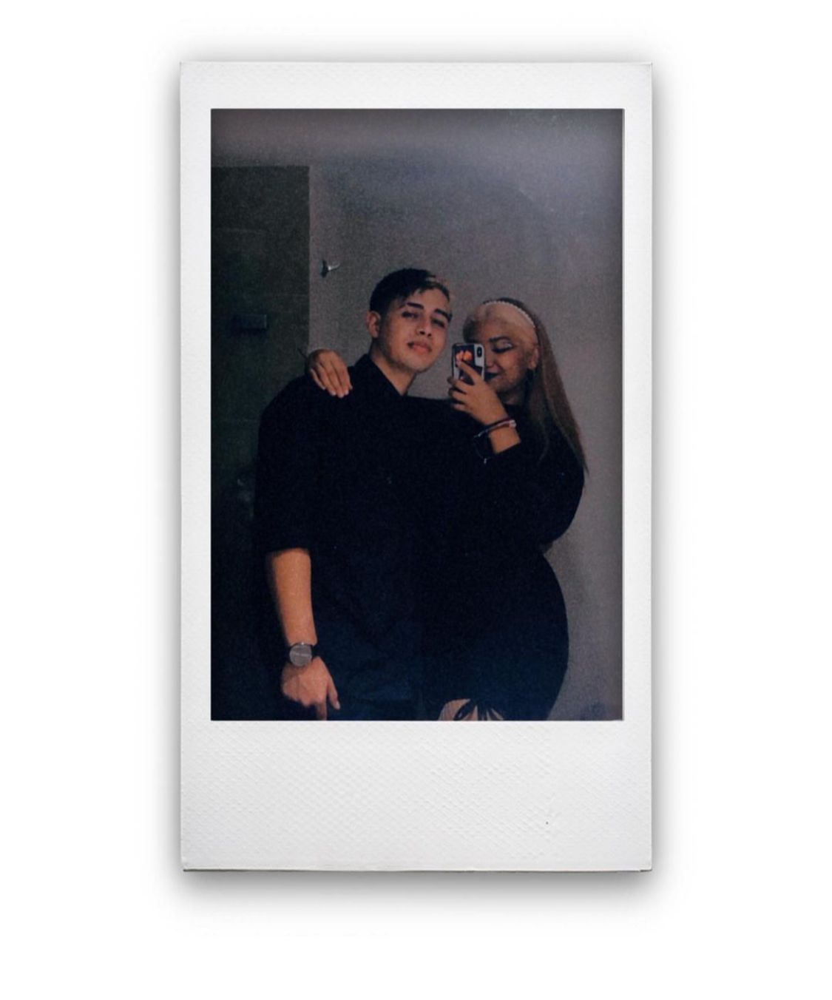
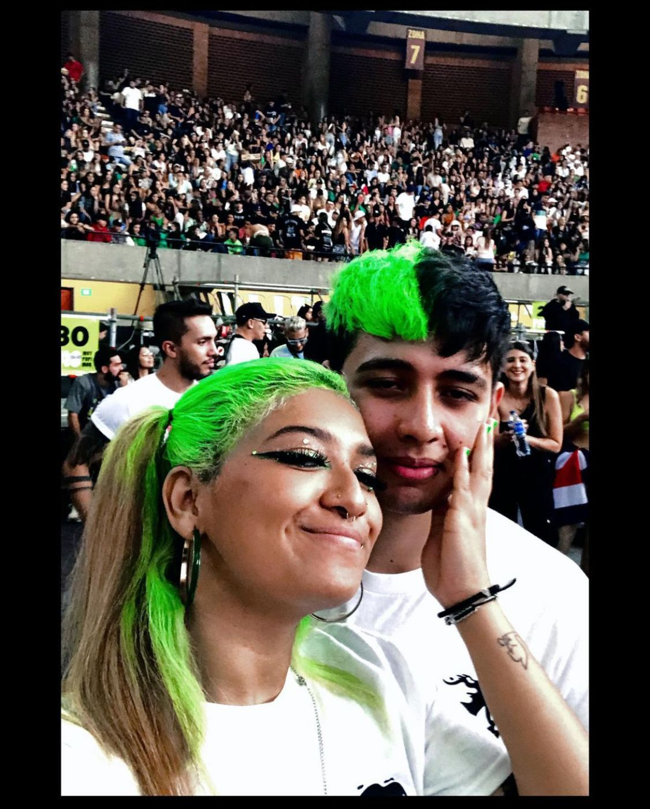
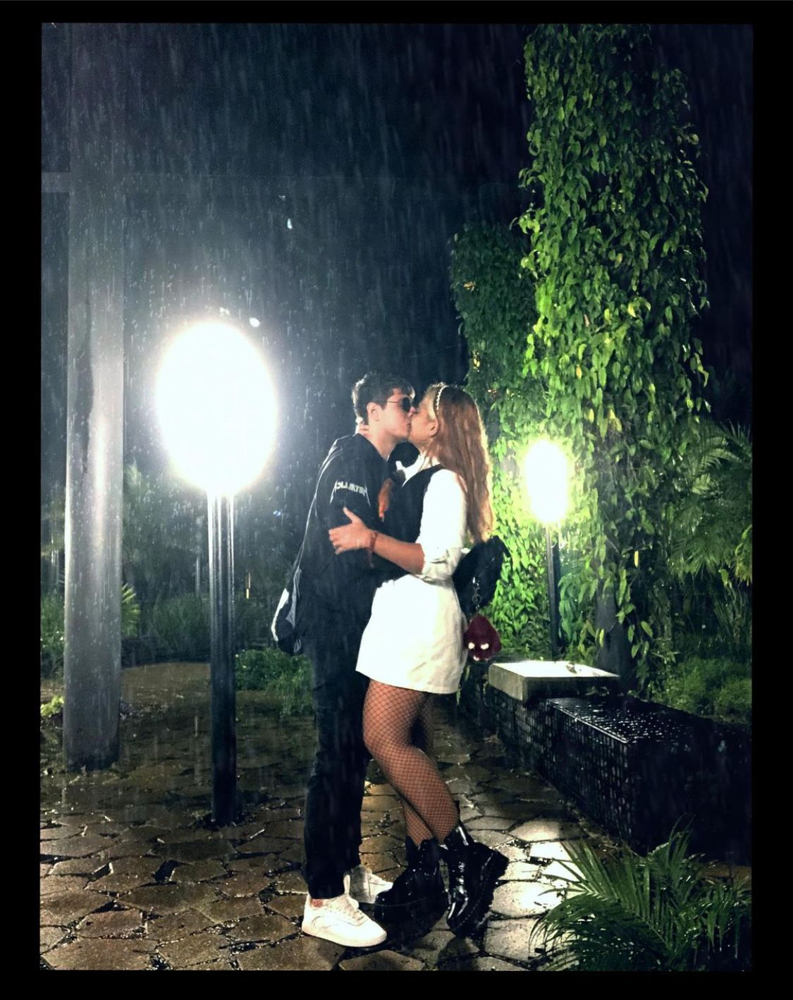
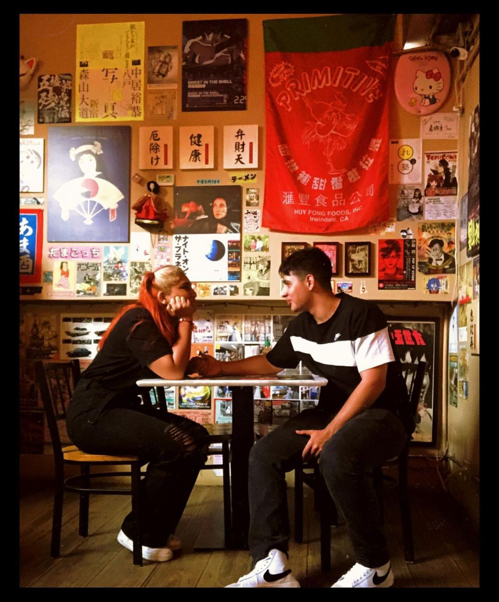
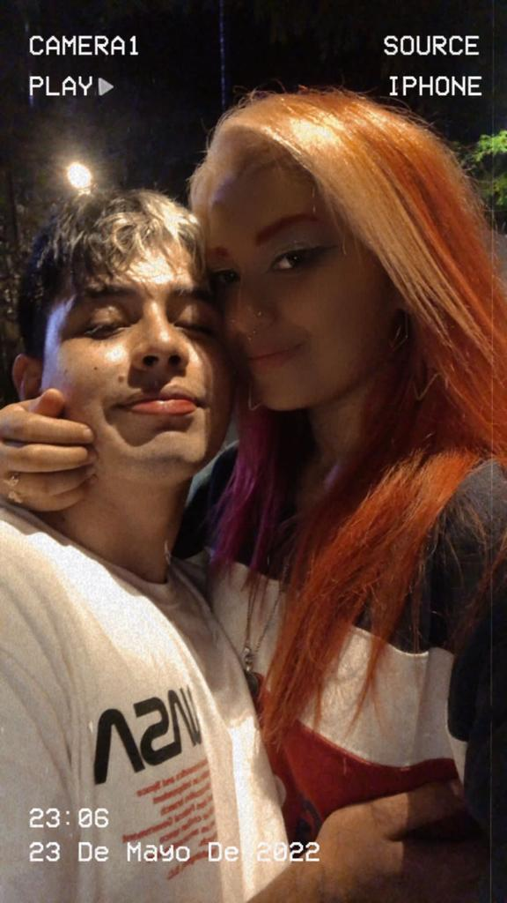

Hola mi amor
para serte sincero esto es algo que es bastante nuevo y al estarlo haciendo uno se termina dando cuenta de lo complicado que puede llegar a ser.
Más que nada a la hora de dar algunos detalles de forma estetica para que no sea solo un pinche texto escrito a la deriba.

Un minuto puede ser malo, pero nunca una hora contigo
Esta es una pequeña forma de informarte o demostrarte por medio de algunas palabras un poco bobas que el amor en mi caso es aquello que motiva
mis días a que quieran experimentar uno nuevo, que aunque aveces esté algo triste unos cuantos minutos
ninguna hora es verdaderamente deprimimente siempre y cuando pueda disfrutar del compartir contigo de cualquier forma, por que aquello que puede amargarme un minutos
no puede amargarme una hora, un día, una semana, un mes, una vida. Siempre y cuando te tenga a ti.

Un recuerdo bonito para una cara tan fea
Este día te lo puedo asegurar que lo recuerdo como el mejor concierto que he tenido en mi vida, sabiendo que aunque tenga un millon de conciertos más
ninguno puede compararse a este si no estás tú, el saber que nuestro amor puede notarse incluso a los ojos de una persona que ve locos todo los días
solo me hace pensar que en esta vida una persona a la que pueda seguir en todas sus locuras con la seguridad apsoluta de que la voy a pasar bien, simplemente es algo que ni con la plata de mil vidas puedo comprar
y todo eso lo encontré en ti mi amor, el amor de mi vida.

La lluevia que limpia la melancolia
Por alguna razón que desconozco, vos con tu forma de ser lograste que yo quisiera pasar una tarde-noche mojandome para tomarnos fotos y quedar bonitos para una publicación
de cualquier manera ese día siento que no pude terminar con más ganas de volverme a quedar bajo la lluvia besandonos y mirandonos las caras como unos bobos, porque hasta esas cosas
que con cualquier persona pueden llegar a significar un problema como tener los zapatos sucios, mojarme o ensuciar mi ropa, contigo lo repetiria mil y un veces, porque todo es divertido
de la mano de la persona correcta y tú eres la persona correcta para mi.

Unas de muchas primeras veces
Algo tan casual como comer una sopa con pastas, algo que una persona externa puede determinar como algo la verdad un poco infantil, pero yo solo puedo recordarlo como tres de nuestras primeras veces más bonitas
primero que nada como la primera vez que comiamos ramen, una comida que se puede ver en multiples series que seguimos y que solamente es especial porque nosotros mismos lo hacemos especial
segundo vestirnos por primera vez con la misma camisa y estar con pintas practicamente iguales para vernos como lo que somos, el mejor duo de la historia
y tres la primera publicación que decidiste tener conmigo, lo cual me sacó mucho de onda, por que en mi caso, nunca nadia hábia hecho tal cosa.

El primer estrellato en tiktok
Lo digo por que así no tenga un millón de likes, en el momento en que vi ese tiktok, literalmente me sentí en la punta más alta del mundo diciendo como un loco
"en efecto señores, ella es la persona que les puedo confirmar que amo con mi vida enter" y hasta el día de hoy y contando los días de mañana, jamás en la vida me voy a cansar de decirlo, jamás de los jamases.

Este pequeño documento contiene:
- El color de los titulos es mi fecha de cumpleaños en rgb.
- El color de el texto es el tuyo.
- Y el color del cuadro del inicio y del final son nustras fechas sumadas.
- Un pequeño parrafo que una vez pensé cuando estaba triste y con un mensaje lo solucionaste.
- Dos fotitos que me gustan mucho, junto con como llegar a donde las saqué.
- Mucho amor
- Y acá ta el link de una canción un poco especial.